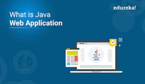

Adatkezelés XML-ben |
Web-es alkalmazások (Java) |
Web technológiák 1 |
A tantárgy célkitűzése:
Program fejlesztés elveinek és gyakorlatának bemutatása JAVA elosztott környezetben. A Java EE technológia alapok megismerése.
1. A tárgy célja, követelményrendszere. Az osztott rendszer fogalma, előnyei. Az osztott rendszerek története. A middleware koncepció. Socket mechanizmus. További alapvető kliens/szerver middleware-ek

2. Alkalmazás architektúrák, webalkalmazás fogalma. A Java servlet technológia.
3. A Java servlet technológia
4. A Java Server Pages (JPS)
5. JSP elemkönyvtárak. Az Expression Language (EL)
6. A JavaBeans komponens modell JSP és JavaBeans.
7. JavaServer Standard Tag Library (JSTL) használata. Saját tag-ek, tag library-k létrehozása
8. Webalkalmazások biztonsági áttekintés, hitelesítés, hozzáférés szabályozás JAVA alapú web alkalmazások esetén. Adat validációs
sérülékenységek, támadások. Munkamenet-követéssel összefüggő sérülékenységek, támadások.
9. Spring framework alapok
10-11. Spring framework MVC
12. Adatok ellenőrzése, adat kötés,konverziók Spring-ben.
13. Összefoglalás
14. Összefoglalás